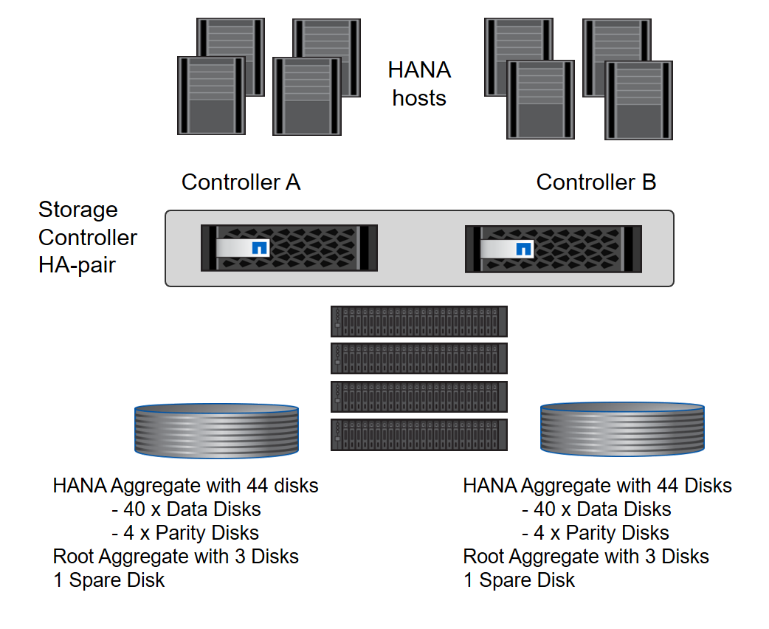

存储控制器设置
提供者
本节介绍 NetApp 存储系统的配置。您必须根据相应的 ONTAP 设置和配置指南完成主安装和设置。
存储效率
在 SSD 配置中， SAP HANA 支持实时重复数据删除，跨卷实时重复数据删除，实时数据压缩和实时数据缩减。
不支持在基于 HDD 的配置中启用存储效率功能。
NetApp 卷加密
SAP HANA 支持使用 NetApp 卷加密（ NVE ）。
Quality of service
QoS 可用于限制共享使用控制器上特定 SAP HANA 系统或其他应用程序的存储吞吐量。其中一个使用情形是，限制开发和测试系统的吞吐量，使其不会影响混合环境中的生产系统。
在规模估算过程中，您应确定非生产系统的性能要求。开发和测试系统的规模可以采用较低的性能值进行调整，通常在 SAP 定义的生产系统 KPI 的 20% 到 50% 范围内。
从 ONTAP 9 开始， QoS 会在存储卷级别进行配置，并使用最大吞吐量值（ MBps ）和 I/O 量（ IOPS ）。
大型写入 I/O 对存储系统的性能影响最大。因此，应将 QoS 吞吐量限制设置为数据卷和日志卷中相应写入 SAP HANA 存储性能 KPI 值的百分比。
NetApp FabricPool
SAP HANA 系统中的活动主文件系统不能使用 NetApp FabricPool 技术。这包括数据和日志区域的文件系统以及 ` /hana 或共享` 文件系统。这样做会导致性能不可预测，尤其是在启动 SAP HANA 系统期间。
可以使用 " 仅快照 " 分层策略，也可以在 FabricPool 或 SnapMirror 目标等备份目标上使用 SnapVault 。

|
使用 FabricPool 在主存储上分层 Snapshot 副本或在备份目标上使用 FabricPool 会更改还原和恢复数据库或执行其他任务（例如创建系统克隆或修复系统）所需的时间。在规划整个生命周期管理策略时，请考虑这一点，并检查以确保在使用此功能时仍符合 SLA 要求。 |
FabricPool 是将日志备份移动到另一存储层的理想选择。移动备份会影响恢复 SAP HANA 数据库所需的时间。因此，应将选项 " 分层最小冷却天数 " 设置为一个值，以便在本地快速存储层上放置恢复所需的日志备份。
存储配置
以下概述总结了所需的存储配置步骤。后续章节将详细介绍每个步骤。在本节中，我们假定已设置存储硬件，并且已安装 ONTAP 软件。此外，存储端口（ 10GbE 或更快）与网络之间的连接必须已建立。
-
按照中所述检查正确的 SAS 堆栈配置 "磁盘架连接。"
-
创建并配置所需的聚合，如中所述 "聚合配置"
-
创建 Storage Virtual Machine （ SVM ），如中所述 "Storage Virtual Machine 配置"
-
按照中所述创建 LIF "逻辑接口配置。"
-
在聚合中创建卷，如中所述 "SAP HANA 单主机系统的卷配置" 和
-
按照中所述设置所需的卷选项 "卷选项"
-
为 NFSv3 设置所需的选项，如中所述 "NFSv3 的 NFS 配置" 或 NFSv4 ，如中所述
-
将卷挂载到命名空间并设置导出策略，如中所述 "将卷挂载到命名空间并设置导出策略。"
磁盘架连接
对于 HDD ，最多可以将两个 DS2246 磁盘架或四个 DS224C 磁盘架连接到一个 SAS 堆栈，以提供 SAP HANA 主机所需的性能，如下图所示。每个磁盘架中的磁盘必须平均分布到 HA 对的两个控制器。

使用 SSD 时，最多可以将一个磁盘架连接到一个 SAS 堆栈，以提供 SAP HANA 主机所需的性能，如下图所示。每个磁盘架中的磁盘必须平均分布到 HA 对的两个控制器。对于 DS224C 磁盘架，也可以使用四路径 SAS 布线，但这不是必需的。

聚合配置
通常，您必须为每个控制器配置两个聚合，而不受所使用的磁盘架或驱动器技术（ SSD 或 HDD ）的影响。对于 FAS2000 系列系统，一个数据聚合就足够了。
使用 HDD 的聚合配置
下图显示了八个 SAP HANA 主机的配置。每个存储控制器连接四个 SAP HANA 主机。配置了两个单独的聚合，每个存储控制器一个。每个聚合都配置有 4 × 10 = 40 个数据磁盘（ HDD ）。

使用纯 SDD 系统进行聚合配置
通常，您必须为每个控制器配置两个聚合，而与使用的磁盘架或磁盘技术（ SSD 或 HDD ）无关。对于 FAS2000 系列系统，一个数据聚合就足够了。
下图显示了在配置了 ADPv2 的 12 Gb SAS 磁盘架上运行的 12 个 SAP HANA 主机的配置。每个存储控制器连接六个 SAP HANA 主机。配置了四个单独的聚合，每个存储控制器两个。每个聚合都配置有 11 个磁盘，其中包含九个数据分区和两个奇偶校验磁盘分区。每个控制器都有两个备用分区。

Storage Virtual Machine 配置
使用 SAP HANA 数据库的多个 SAP 环境可以使用一个 SVM 。如果需要，还可以为每个 SAP 环境分配一个 SVM ，以防这些 SVM 由公司内的不同团队管理。
如果在创建新 SVM 期间自动创建和分配了 QoS 配置文件，请从 SVM 中删除自动创建的配置文件，以提供 SAP HANA 所需的性能：
vserver modify -vserver <svm-name> -qos-policy-group none
逻辑接口配置
对于 SAP HANA 生产系统，您必须使用不同的 LIF 从 SAP HANA 主机挂载数据卷和日志卷。因此，至少需要两个 LIF 。
不同 SAP HANA 主机的数据和日志卷挂载可以通过使用相同的 LIF 或为每个挂载使用单独的 LIF 来共享物理存储网络端口。
下表显示了每个物理接口的最大数据和日志卷挂载数。
| 以太网端口速度 | 10GbE | 25GbE | 40GbE | 100 个地理位置 |
|---|---|---|---|---|
每个物理端口的最大日志或数据卷挂载数 |
2. |
6. |
12 |
24 |
|
|
在不同 SAP HANA 主机之间共享一个 LIF 可能需要将数据或日志卷重新挂载到其他 LIF 。如果将卷移动到其他存储控制器，此更改可避免性能降低。 |
开发和测试系统可以在物理网络接口上使用更多的数据和卷挂载或 LIF 。
对于生产，开发和测试系统， ` /ha/shared` 文件系统可以使用与数据或日志卷相同的 LIF 。
SAP HANA 单主机系统的卷配置
下图显示了四个单主机 SAP HANA 系统的卷配置。每个 SAP HANA 系统的数据卷和日志卷会分布到不同的存储控制器。例如，在控制器 A 上配置了卷 SID1_data_mnt00001 ，在控制器 B 上配置了卷 SID1_log_mnt00001
|
|
如果 SAP HANA 系统仅使用 HA 对中的一个存储控制器，则数据和日志卷也可以存储在同一个存储控制器上。 |
|
|
如果数据卷和日志卷存储在同一控制器上，则必须使用两个不同的 LIF 从服务器访问存储：一个 LIF 用于访问数据卷，一个 LIF 用于访问日志卷。 |

对于每个 SAP HANA DB 主机，都会为 ` 或 HANA 或 Shared` 配置一个数据卷，一个日志卷和一个卷。下表显示了单主机 SAP HANA 系统的配置示例。
| 目的 | 控制器 A 上的聚合 1 | 控制器 A 上的聚合 2 | 控制器 B 上的聚合 1 | 控制器 b 上的聚合 2 |
|---|---|---|---|---|
系统 SID1 的数据，日志和共享卷 |
数据卷： SID1_data_mnt00001 |
共享卷： sid1_shared |
– |
日志卷： SID1_LOG_mnt00001 |
系统 SID2 的数据，日志和共享卷 |
– |
日志卷： SID2_LOG_mnt00001 |
数据卷： SID2_data_mnt00001 |
共享卷： sid2_shared |
系统 SID3 的数据，日志和共享卷 |
共享卷： sID3_shared |
数据卷： SID3_data_mnt00001 |
日志卷： SID3_LOG_mnt00001 |
– |
系统 SID4 的数据，日志和共享卷 |
日志卷： SID4_LOG_mnt00001 |
– |
共享卷： SID4_shared |
数据卷： SID4_data_mnt00001 |
下表显示了单主机系统的挂载点配置示例。要将 sidadm 用户的主目录放在中央存储上，应从 SID_shared 卷挂载 ` us/sap/SID` 文件系统。
| Junction path | 目录 | HANA 主机上的挂载点 |
|---|---|---|
sid_data_mnt00001 |
– |
/ha/data/sid/mnt00001 |
sid_log_mnt00001 |
– |
/ha/log/sid/mnt00001 |
sid_shared |
use-sap 共享 |
/usr/sap/SID /has/shared |
SAP HANA 多主机系统的卷配置
下图显示了 4+1 SAP HANA 系统的卷配置。每个 SAP HANA 主机的数据卷和日志卷分布到不同的存储控制器。例如，在控制器 A 上配置了卷 SID1_data1_mnt00001 ，在控制器 B 上配置了卷 SID1_log1_mnt00001
|
|
如果 SAP HANA 系统仅使用 HA 对的一个存储控制器，则数据和日志卷也可以存储在同一个存储控制器上。 |
|
|
如果数据卷和日志卷存储在同一控制器上，则必须使用两个不同的 LIF 从服务器访问存储：一个用于访问数据卷，一个用于访问日志卷。 |

对于每个 SAP HANA 主机，系统会创建一个数据卷和一个日志卷。` HANA 系统的所有主机都使用` /hana / 共享 卷。下表显示了具有四个活动主机的多主机 SAP HANA 系统的配置示例。
| 目的 | 控制器 A 上的聚合 1 | 控制器 A 上的聚合 2 | 控制器 B 上的聚合 1 | 控制器 B 上的聚合 2 |
|---|---|---|---|---|
节点 1 的数据卷和日志卷 |
数据卷： sid_data_mnt00001 |
– |
日志卷： sid_log_mnt00001 |
– |
节点 2 的数据卷和日志卷 |
日志卷： sid_log_mnt00002 |
– |
数据卷： sid_data_mnt00002 |
– |
节点 3 的数据卷和日志卷 |
– |
数据卷： sid_data_mnt00003 |
– |
日志卷： sid_log_mnt00003 |
节点 4 的数据卷和日志卷 |
– |
日志卷： sid_log_mnt00004 |
– |
数据卷： sid_data_mnt00004 |
所有主机的共享卷 |
共享卷： sid_shared |
– |
– |
– |
下表显示了具有四个活动 SAP HANA 主机的多主机系统的配置和挂载点。要将每个主机的 sidadm 用户的主目录放置在中央存储上，会从 SID_shared 卷挂载 ` us/sap/SID` 文件系统。
| Junction path | 目录 | SAP HANA 主机上的挂载点 | 注意 |
|---|---|---|---|
sid_data_mnt00001 |
– |
/ha/data/sid/mnt00001 |
已挂载到所有主机上 |
sid_log_mnt00001 |
– |
/ha/log/sid/mnt00001 |
已挂载到所有主机上 |
sid_data_mnt00002 |
– |
/ha/data/sid/mnt00002 |
已挂载到所有主机上 |
sid_log_mnt00002 |
– |
/ha/log/sid/mnt00002 |
已挂载到所有主机上 |
sid_data_mnt00003 |
– |
/ha/data/sid/mnt00003 |
已挂载到所有主机上 |
sid_log_mnt00003 |
– |
/ha/log/sid/mnt00003 |
已挂载到所有主机上 |
sid_data_mnt00004 |
– |
/ha/data/sid/mnt00004 |
已挂载到所有主机上 |
sid_log_mnt00004 |
– |
/ha/log/sid/mnt00004 |
已挂载到所有主机上 |
sid_shared |
共享 |
/ha/shared/ |
已挂载到所有主机上 |
sid_shared |
usr-sap-host1 |
/usr/sap/SID |
挂载在主机 1 上 |
sid_shared |
usr-sap-host2. |
/usr/sap/SID |
挂载在主机 2 上 |
sid_shared |
usr-sap-host3. |
/usr/sap/SID |
挂载在主机 3 上 |
sid_shared |
usr-sap-host4. |
/usr/sap/SID |
挂载在主机 4 上 |
sid_shared |
usr-sap-host5 |
/usr/sap/SID |
挂载在主机 5 上 |
卷选项
您必须在所有 SVM 上验证并设置下表中列出的卷选项。对于某些命令，您必须在 ONTAP 中切换到高级权限模式。
| Action | 命令 |
|---|---|
禁用 Snapshot 目录可见性 |
vol modify -vserver <vserver-name> -volume <volname> -snapdir-access false |
禁用自动 Snapshot 副本 |
vol modify – vserver <vserver-name> -volume <volname> -snapshot-policy none |
禁用除 SID_shared 卷以外的访问时间更新 |
设置高级 vol modify -vserver <vserver-name> -volume <volname> -atime-update false set admin |
NFSv3 的 NFS 配置
下表中列出的 NFS 选项必须在所有存储控制器上进行验证和设置。
对于所示的某些命令，您必须在 ONTAP 中切换到高级权限模式。
| Action | 命令 |
|---|---|
启用 NFSv3 ： |
NFS modify -vserver <vserver-name> v3.0 已启用 |
ONTAP 9 ：将 NFS TCP 最大传输大小设置为 1 MB |
设置 advanced nfs modify -vserver <vserver_name> -tcp-max-xfer-size 1048576 set admin |
ONTAP 8 ：将 NFS 读取和写入大小设置为 64 KB |
设置 advanced nfs modify -vserver <vserver-name> -v3-tcp-max-read-size 65536 nfs modify -vserver <vserver-name> -v3-tcp-max-write-size 65536 set admin |
NFSv4 的 NFS 配置
下表中列出的 NFS 选项必须在所有 SVM 上进行验证和设置。
对于某些命令，您必须在 ONTAP 中切换到高级权限模式。
| Action | 命令 |
|---|---|
启用 NFSv4 ： |
NFS modify -vserver <vserver-name> -v4.1 已启用 |
ONTAP 9 ：将 NFS TCP 最大传输大小设置为 1 MB |
设置 advanced nfs modify -vserver <vserver_name> -tcp-max-xfer-size 1048576 set admin |
ONTAP 8 ：将 NFS 读取和写入大小设置为 64 KB |
设置 advanced nfs modify -vserver <vserver_name> -tcp-max-xfer-size 65536 set admin |
禁用 NFSv4 访问控制列表（ ACL ） |
nfs modify -vserver <vserver_name> -v4.1-acl 已禁用 |
设置 NFSv4 域 ID |
nfs modify -vserver <vserver_name> -v4-id-domain <domain-name> |
禁用 NFSv4 读取委派 |
nfs modify -vserver <vserver_name> -v4.1-read-delegation disabled |
禁用 NFSv4 写入委派 |
NFS modify -vserver <vserver_name> -v4.1-write-delegation 已禁用 |
设置 NFSv4 租用时间 |
设置高级 NFS 修改 -vserver <vserver_name> -v4-lease-seconds 10 set admin |
禁用 NFSv4 数字 ID |
nfs modify -vserver <vserver_name> -v4-numeric-id 已禁用 |
|
|
对于 NFS 版本 4 。0 ，替换 4 。1 和 4.0 。虽然支持 NFSv4.0 ，但最好使用 NFSv4.1 。
|
|
|
在所有 Linux 服务器（ /etc/idmapd.conf ）和 SVM 上，必须将 NFSv4 域 ID 设置为相同的值，如中所述 "NFSv4 的 SAP HANA 安装准备。"
|
|
|
如果使用的是 NFSv4.1 ，则默认情况下会启用并使用 pNFS （建议）。 |
如果使用 SAP HANA 多主机系统，请按下表所示设置 SVM 的 NFSv4 租赁时间。
| Action | 命令 |
|---|---|
设置 NFSv4 租用时间。 |
设置高级 NFS 修改 -vserver <vserver_name> -v4-lease-seconds 10 set admin |
从 HANA 2.0 SPS4 开始， HANA 提供了用于控制故障转移行为的参数。NetApp 建议使用这些 HANA 参数，而不是在 SVM 级别设置租用时间。这些参数位于 nameserver.ini 中，如下表所示。请在这些部分中保留默认重试间隔 10 秒。
| 部分 nameserver.ini | 参数 | 价值 |
|---|---|---|
故障转移 |
normal 重试 |
9 |
Distributed watchdog |
deactivation_retries |
11. |
Distributed watchdog |
takeover_retries |
9 |
将卷挂载到命名空间并设置导出策略
创建卷时，必须将卷挂载到命名空间。在本文档中，我们假定接合路径名称与卷名称相同。默认情况下，使用默认策略导出卷。如果需要，可以调整导出策略。
 请求文档变更
请求文档变更 在 GitHub 上编辑
在 GitHub 上编辑 提供者指南
提供者指南